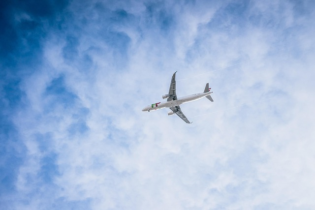

✈️ Volar: Todo lo que necesitas saber antes de subir al avión

Volar es una de las formas más rápidas y seguras de viajar, perfecta para explorar nuevos destinos, visitar seres queridos o asistir a eventos importantes.
Aquí te ofrecemos información útil, consejos prácticos y curiosidades que harán tu experiencia más cómoda y placentera.
🌍 Beneficios de viajar en avión
- Ahorro de tiempo en trayectos largos
- Mayor comodidad en vuelos internacionales
- Seguridad: es uno de los medios de transporte más seguros
- Amplia oferta de destinos y horarios
- Posibilidad de acumular millas o puntos de viajero frecuente
📋 Pasos para volar por primera vez
- Reservar el billete con antelación
- Comprobar la documentación (pasaporte, visado, etc.)
- Realizar el check-in online (si está disponible)
- Llegar al aeropuerto con suficiente tiempo
- Pasar por el control de seguridad
- Localizar tu puerta de embarque
- Embarcar cuando sea tu turno
- Disfrutar del vuelo
- Recoger tu equipaje (si facturaste)
- ¡Bienvenido a tu destino!
💼 Qué llevar en tu equipaje de mano
- Documentos importantes (pasaporte, tarjetas, reservas)
- Cargador de móvil y batería externa
- Tapones para los oídos o auriculares
- Almohada de viaje
- Botella vacía para rellenar después del control
- Algo de lectura o entretenimiento
- Medicamentos esenciales
- Ropa ligera de repuesto (en vuelos largos)
🚫 Qué no llevar en el equipaje de mano
- Líquidos de más de 100 ml
- Cuchillos, tijeras o herramientas afiladas
- Sustancias inflamables o explosivas
- Comida muy olorosa
- Baterías de litio sueltas sin protección
- Armas o réplicas realistas
🛫 Consejos para un vuelo más cómodo
- Elige un buen asiento (ventana si quieres dormir, pasillo si prefieres moverte)
- Usa ropa cómoda y por capas
- Mantente hidratado
- Camina o estira las piernas cada pocas horas
- Lleva snacks saludables
- Ajusta tu reloj al horario del destino para reducir el jet lag
💡 Curiosidades sobre volar
- El primer vuelo comercial fue en 1914 entre St. Petersburg y Tampa, Florida
- El despegue y el aterrizaje son las fases más importantes del vuelo
- Los aviones comerciales vuelan entre 9.000 y 12.000 metros de altura
- La tripulación está entrenada para emergencias médicas, incendios y evacuaciones
- Muchas aerolíneas utilizan música suave para reducir la ansiedad de los pasajeros